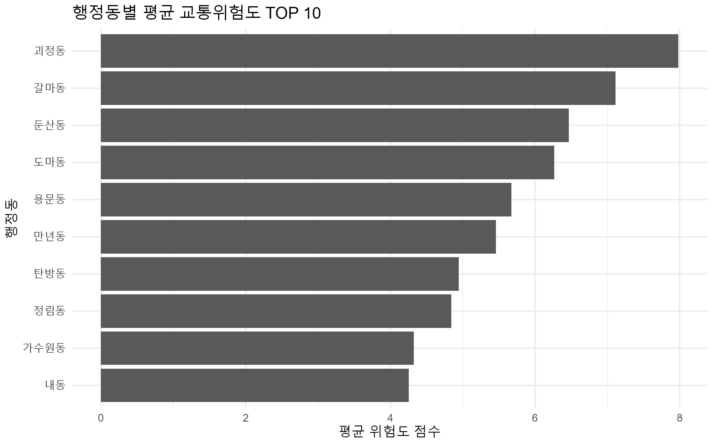
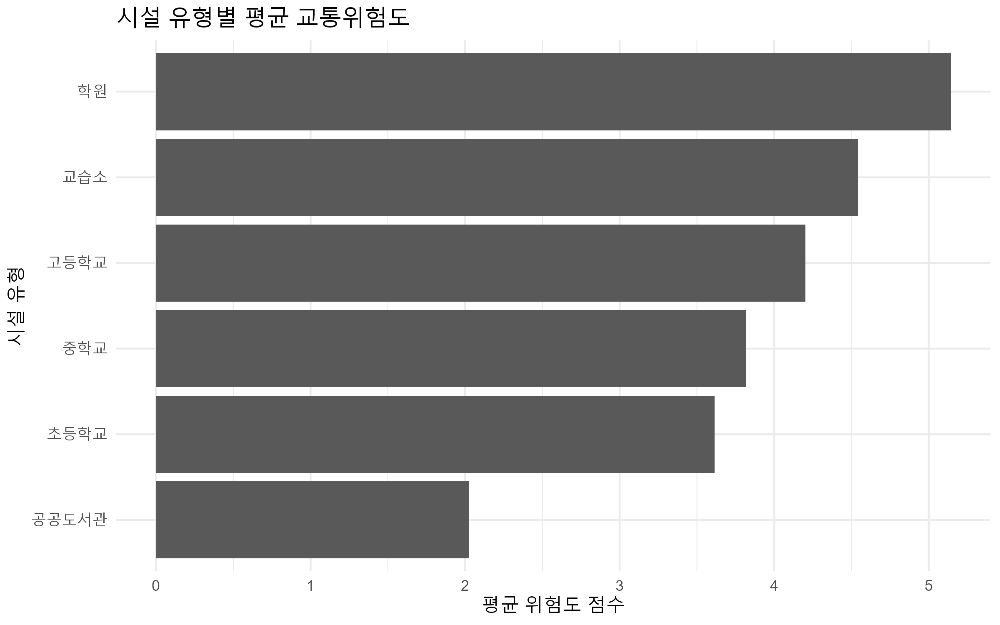
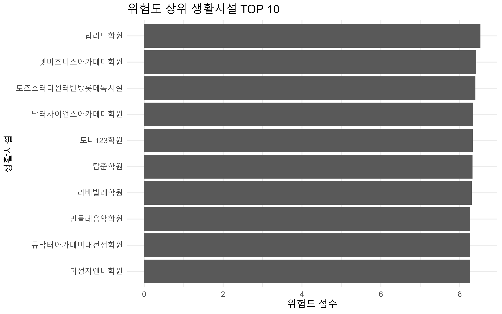

SafeFlow Lens란?
SafeFlow Lens는 어린이보호구역에 한정하지 않고, 학생들이 실제로 많이 이동하는 학원, 교습소, 도서관 등 생활시설 주변의 교통위험도를 분석하는 웹 기반 프로토타입입니다. 본 프로젝트는 AI 완성 서비스가 아니라, 공공데이터 분석 결과를 시민이 쉽게 이해할 수 있도록 시각화하는 데이터 기반 안전 플랫폼을 목표로 합니다.
활용 데이터
교육시설 위치 데이터
대전광역시 서구 초등학교·중학교·고등학교 위치 현황을 활용하여 학생 이동의 기준 시설을 설정했습니다.
학원 및 교습소 현황
동부·서부교육지원청의 학원 및 교습소 현황을 활용하여 어린이보호구역 밖 학생 생활권을 반영했습니다.
공공도서관 현황
대전광역시 공공도서관 데이터를 활용하여 학생들이 이용할 수 있는 학습 생활시설을 추가했습니다.
교통사고 다발지역 데이터
전국교통사고다발지역표준데이터 중 대전 서구 사고다발지역을 추출하여 위험도 산출에 반영했습니다.
분석 방법
본 분석은 좌표 기반 정밀 거리 계산이 아니라, 같은 행정동에 위치한 생활시설과 사고다발지역을 같은 생활권으로 보고 연결한 상대적 위험도 분석입니다.
분석 결과
평균 교통위험도 최상위
학교 밖 학생 생활권 위험도 확인
행정동 기준 상대 위험도 비교
행정동별 평균 교통위험도 TOP 10

시설 유형별 평균 교통위험도

위험도 상위 생활시설 TOP 10

위험도 히트맵
사고다발지역 좌표와 위험도 점수를 활용하여 생활시설 주변의 위험도 분포를 지도 위에 시각화했습니다. 히트맵은 특정 시설 앞의 실제 사고위험을 단정하는 것이 아니라, 대전 서구 생활권 단위의 상대적 위험 분포를 보여주는 프로토타입입니다.
생활시설 주변 위험도 지도
사고건수, 사상자수, 시설 이용 규모를 반영한 위험도 점수를 기반으로 위험도가 높은 지역을 지도상에 강조합니다.
기술 구현 과정
R을 활용하여 공공데이터를 통합하고, 사고건수·사상자수·시설 이용 규모를 바탕으로 위험도 점수를 계산했습니다. 이후 ggplot2로 그래프를 제작하고, HTML/CSS/JavaScript 기반 웹사이트에 시각화 결과를 삽입했습니다.
고도화 계획
XGBoost
날씨, 시간대, 사고 이력 등을 활용한 교통위험도 예측 모델로 확장합니다.
LSTM
하교 시간, 학원 종료 시간 등 시간 흐름에 따른 위험도 변화 예측을 추가합니다.
지도 API
좌표 기반 거리 계산과 실제 지도 히트맵 시각화 기능을 고도화합니다.
실시간 알림
위험도가 높은 생활권에 대한 사용자 맞춤형 안전 알림 기능을 제공합니다.